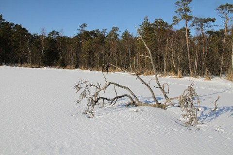
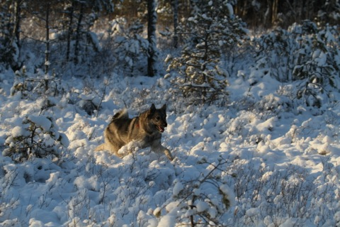
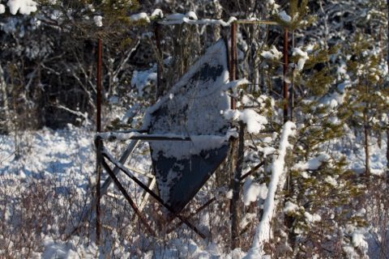
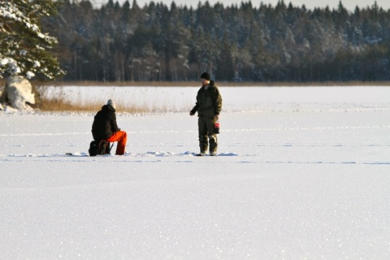
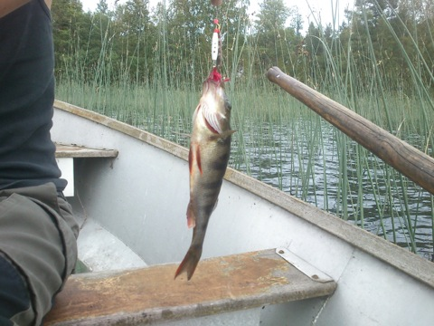

Vad är Florarna ?
Florarna är inte bara det område som idag benämns naturreservatet Florarna. Geografiskt tillhör även stora områden som inte är skyddade mot skogsbruk och andra mänskliga åtgärder såsom byggande av skogskörvägar etc.

Skidåkare vid Lilla Agnsjön den 16 mars 2013. Foto: Ronny Fredriksson
Söder om reservatet är det främst området kring Fågelsmossen och Hålmyrarna som egentligen tillhör Florarna. Man kan säga att den egentliga södra gränsen går där den gamla färdleden Gullstigen går i öst-västlig riktning mellan Labbo och Sibbo.
Nordväst om reservatet är det sjön Fälaren, 204 hektar stor med maxdjup 5 meter, med omgivande skog och våtmarker som geografiskt tillhör Florarna.
Öster om reservatet finns stora delar av mossar etc som tillhör området geografiskt såsom Storbya hjortronmosse, myrarna som sträcker sig österut mot Sandmon och Sjudars.
Norr om reservatet anser jag att stora delar av sjösystemet ner mot Lövstabruk dvs Finnsjön-Åkerbysjön-Ensjön med omgivande myrar tillhör Florarna geografiskt.
Storleken på det område som är skyddat som naturreservat beror lite på vilken status man ger den sk ”yttre zonen” av naturreservatet. Skall jag vara krass så är den yttre zonen = oskyddat område. I den yttre zonen bedrivs skogsbruk precis som på vilken normal produktionsmark som helst. Tyvärr. Detta trots följande beslutade regler för den yttre zonen:
”Skogsbruk kan inom yttre zonen bedrivas på fastmarkerna.” Min kommentar: I praktiken har det även bedrivits skogsbruk helt ohämmat på våtmarkerna i yttre zonen. Ett skrämmande exempel är det område som på kartan benämns Mixan. Där låg en av områdets största sk blåbärs-tallmosse med husmossor och med grova tallar, den var 15 hektar stor. På topografiska kartan var den dock inte utmärkt utan såg ut som fastmark. Denna dokumenterades som skyddsvärd i Eric Haglunds ”Naturvårdsinventering av Uppsala län” som gjordes 1972. Idag finns inget kvar av denna blåbärs-tallmosse. Den blev kalavverkad.
”Området (naturreservatets yttre zon) är därvid att betrakta som skogsmark, där särskild hänsyn skall tas.”
Var gärna med och bevaka att föreskrifterna för den yttre zonen efterlevs. Har saxat dem nedan. För kompletta reservatsföreskrifter se sidan Dokument om Florarna
”Utöver föreskrifter och förbud i lagar och författningar skall utan lansstyrelsens tillstånd förbud gälla att:
1. bedriva verksamhet som förändrar reservatets topografi och landskapets allmänna karaktär, yt- eller dräneringsforhallanden, såsom att dika, dämma och tippa massor. Normal markberedning på fastmarker samt underhåll av befintliga diken, som framgår av den av lansstyrelsen fastställda skötselplanen, är tillåtet,
2. anordna upplag, annat än tillfälliga för skogs- och jordbrukets behov, eller i samband med reservatets skötsel,
3. anlägga eller väsentligt förbättra eller förändra väg, eller parkeringsplats, normala stickvägar (ej basvägar) för traktordrift dock undantagna,
4. dra fram mark- eller luftledning,
5. anbringa tavla, plakat, affisch, skylt, inskrift eller därmed jämförlig anordning; informations- och fridlysningsstolpar, gränsmarkeringsstolpar samt för skogsbruket erforderliga anslag undantagna,
6. uppföra helt ny byggnad eller annan anläggning eller ändra befintliga för att tillgodose ett annat ändamål än det vartill dessa tidigare varit använda, tillfälliga rastkojor för skogsbrukets behov undantagna,
7. uppföra stängsel eller hägnader annat än för jordbrukets behov,
8. sprida kemiska eller biologiska bekämpningsmedel eller miljöfarliga varor, annat än på hyggestrakter och yngre skog med den inskränkningen att spridningen ej far göras så att den kan medföra att utspridda ämnen föres in i den inre zonen,
9. tillföra växtnäringsämnen, med undantag inom nu befintlig tomt, åker och betesmark, som framgår av den av länsstyrelsen fastställda skötselplanen,
10. göra andra ingrepp som kan innebära förorening eller annan förändring av mark- eller vattenområden,
11. inplantera for trakten idag främmande växt- eller djurarter,
12. slutavverka större ytor på produktiv skogsmark och att utföra annan avverkning än gallring på våtmarksimpediment, (t ex tallmosse och skogskärr), (observera dessutom den generella anmälningsplikten för slutavverkning enligt 8 § skogsvårdslagen och tillämpningsanvisningarna till 1 § samma lag),

Naturvårdssymbolen snöflingan vid gränsen till naturreservatets yttre zon ger inget skydd. Foto: Ronny Fredriksson
13. framföra motordrivet fordon på våtmark, som ej är bärkraftig för fordonet,
14. upplåta mark för uppställning av husvagn, släpvagn eller motordrivet fordon, ”
Enligt uppgift i Upsala Nya Tidning för några år sedan planeras en utvidgning av naturreservatets inre zon, dvs Kronan ska äga mer mark.
Den inre zonen är helt skyddad och erbjuder många spännande platser.

Röttter i trollskog i nordöstra Florarna. Foto: Ronny Fredriksson
Korta fakta om själva naturreservatet Florarna:
Förslag om naturreservat kom från Svenska Naturskyddsföreningen redan 1955. Först tjugoett år senare togs beslutet om naturreservat: 1976-06-17. För beslutstext och fullständiga reservatsföreskrifter se dokument sidan.
Förvaltning, skötsel och tillsyn sker av Länsstyrelsen i Uppsala län. De går att nå på telefon 010 - 22 33 228 eller 010 - 22 33 000.
Ingår i kommunerna Tierp och Östhammar
Socknar: Film, Tegelsmora och Österlövsta. Gränsröset där de tre socknarna möts kallas Femstena röret och ligger ett hundratal meter SV Brändöns kolarkoja.
Yta inre zonen: 2620 hektar
Yta yttre zonen: 1500 hektar
Därav sjöareal: 220 hektar
Total yta för naturreservatet: cirka 4120 hektar
Ingående sjöar och tjärnar: 8 stycken. Finnsjön 432 hektar med största djup 3 meter (del av), Andersbo-Liss sjön 6 hektar (även kallad Jocksjön), Skälsjön 9 hektar med maxdjup 2 meter, Risö trusk, Vikasjön 95 hektar med maxdjup 3,5 meter, Fillsartrusket 2 hektar med största djup cirka 5 meter, Stora Agnsjön 23 hektar med ett maxdjup på 2-3 meter och Lilla Agnsjön 9 hektar.
Ingående åar/bäckar: 5 stycken. Gammelån/Nydiket, Fälarån (del av), Storån/Norrbergsån, Långån och avrinningen Andersbo-Liss sjön.
Gårdar/byar i reservatet: 2 stycken. Vika (yttre zonen) samt Risön (inre zonen)
Öppna övernattningskojor: Västra källarboden Risön (2 britsar) och elvärme, Norrbergskojan (2 britsar) med kamin, Brändöns kolarkoja (2 britsar) med eldstad, Fillsarby orrgömsle (golvet max 3 personer) och Agnsjöstugan (4 britsar) med kamin.
Vindskydd/slogbod: 1 stycken. Stormon.
Stuga att hyra: 1 stycken. Tillsynsmannatorpet Västergärdet (se dokument sidan). Kontakta Länsstyrelsen på telefon 010 - 22 33 241 för ytterligare information om att hyra tillsynsmannatorpet Västergärdet.
Lägergård att hyra: 1 stycken. Lägergården Risön (se dokument sidan). Kontakta Länsstyrelsen på telefon 010 - 22 33 241 för ytterligare information om att hyra lägergården Risön.
Rastplatser/eldplatser med ved: Risön, Brändöns kolarkoja, Staffans holmen, Karbotten (Grillholmen), Stormon, Agnsjöstugan samt Vika/Risbergstomten (den sistnämnda ingen eldplats).
Vatten: 3 platser. Handpump vid Risbergstomten Vika, Handpump vid tillsynsmannatorpet Västergärdet samt sommarvatten genom kran vid Risön. Inga garantier beträffande vattenkvalitetén.
Dass/TC: 6 platser. Risön, tillsynsmannatorpet Västergärdet, Brändöns kolarkoja, Stormon, Agnsjöstugan samt Risbergstomten Vika.
Soptunnor: 3 platser. Risön, Stormon och Risbergstomten/Vika.
Jakten i yttre zonen är precis som på vilken annan privat mark som helst. Dock brukar inte jakt på lo tillåtas i den yttre zonen. Jakten i inre zonen, som ägs av staten, utarrenderas till fem olika jaktlag med begränsningar i att ingen jakt får bedrivas mellan den 1 mars och den 15 augusti. Övrig tid får jakt ej ske på sjöfågel, vadare eller skogshöns (tjäder, orre och järpe) dessa arter är således totalfredade i naturreservatet Florarna.

Jakthund på myr i Florarna. Foto: Ronny Fredriksson

Jakttorn i stål som börjar se ut som skrot. Inre zonen av naturreservatet. Foto: Ronny Fredriksson
Fisket i inre zonen är utarrenderat i Stora Agnsjön till enskild person. I Vikasjön och Skälsjön med mellanliggande Norrbergsån/Storån till en fiskeklubb. Således är fisket i dessa vatten enskilt och fiskeförbud råder för allmänheten. Fisket i Lilla Agnsjön verkar inte vara reglerat (?) men fråga Länsstyrelsen för säkerhets skull. Fisket i Finnsjön är reglerat av Finnsjön mfl sjöars fiskevårdsområde och här kan man lösa fiskekort, fiskekortet gäller då Finnsjön inklusive den del som ligger i naturreservatet, Lissvass, Åkerbysjön och Ensjön, jämte mellanliggande vattendrag. Årskort för familj kostar för närvarande 250 kronor. Fiskekort kan köpas av Lars Eriksson i Källviken, telefon 0294-350 47.

Pimpelfiske på Vikasjön den 29 januari 2012. Foto: Ronny Fredriksson

Aborre tagen på kastspö i södra delen av Finnsjön. Foto: Ronny Fredriksson
Tillsynsmän i naturreservatet Florarna
Hans Strand 1976 - 1984
Holger Hagel 1984-2005
Ronny Fredriksson 2003-2006
Per Blomkvist 2007-2009
Efter detta har ingen tillsynsman/naturbevakare utsetts, utan det sker direkt från Länsstyrelsens kansli i Uppsala. Skötseln sker i viss grad av anlitade entreprenörer.